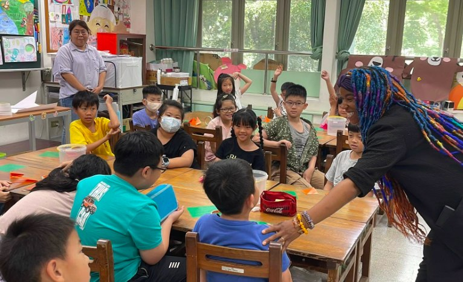
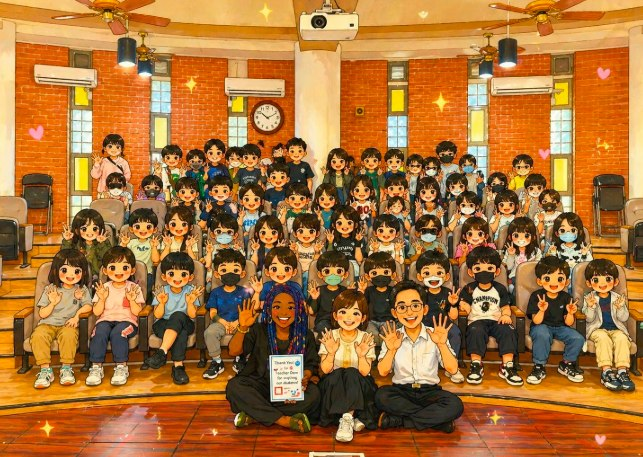

Across borders, with love — Teacher Dom makes a surprise appearance at Hsinmin! Today the children of Hsinmin met a bright spark from across the world. We were deeply honoured to welcome Dom Jones to our campus.
Dom Jones is an internationally known public figure and content creator, the Government Affairs Ambassador of the United Nations Association of Orange County (UNA-OC), a social-media influencer, a television personality and the CEO of Propel. A recipient of the 2024 American Youth Leadership Award, she is devoted to promoting the UN Sustainable Development Goals (SDGs) and often carries out cultural exchange and international education in schools across Taiwan — known to many as 'International Goodwill Ambassador, Teacher Dom.' Today she brought a wealth of love and the spirit of the SDGs for a deep cultural exchange with Hsinmin's students and staff.
A meeting of educational visions — an interview with the principal. The day opened with a conversation about the future of English and international education — not only the learning of language, but how to help children grow wings to sail toward the world from within their own local culture.
A promise to protect the Earth — an Earth Day SDGs talk. On the eve of Earth Day, Teacher Dom gave a moving talk to the sixth-graders, leading them to consider the importance of environmental sustainability and encouraging everyone to put the SDGs into practice in daily life and become true guardians of the Earth. The children's eager participation drew her warm praise.

A warm weave of music and craft. After hearing the wonderful performance of the String-and-Flute Ensemble, Teacher Dom was deeply moved, personally cheering on each young musician. She then visited Class 201 to fold carnations with the second-graders; Teacher Chiu-yan gave her an exquisite bead-art Mazu figure and a Taiwan-themed card, weaving local feeling into this friendship. Amid the laughter, everyone wished all the mothers of the world an early Happy Mother's Day.
Confident little tour guides. On a campus tour, the children plucked up their courage and, in shy but sincere words, introduced Hsinmin's points of pride: the geometric, Mondrian-inspired aesthetic restroom, the knowledge-filled 'Book-Amazing Library,' and the heritage-rich Art-and-Music Senior Classroom.
A wish card from Teacher Dom to the children of Hsinmin. At the end, she left behind some words that brought tears to our eyes — a gift not only to the children but a source of strength for us all:

“I WANT to tell you, that I love you and please remember how special you are!! Always work hard for your dreams and believe in yourself. You are on the EARTH for a special reason, and that reason is to fulfill your unique purpose. Your purpose is your gift from the universe. So find your special gift and you will live your own perfect life!! (I LOVE MYSELF!) I AM ENOUGH.”
Thank you, Teacher Dom, for giving Hsinmin such a wonderful, love-filled afternoon. We believe these seeds have already begun to sprout in the children's hearts and will one day blossom into confident, brilliant flowers.
A few days later, the highlight video of the visit was released — not just a record of the event, but an important footprint in Hsinmin's promotion of international education and bilingual learning. Special thanks to Teachers Luke, Renyang and Shuyuan of My Culture Connect (MCC) for their dedicated filming, editing and production. Watch it below:
跨越國界的感動！Teacher Dom 驚喜現身新民國小 🌟
新民國小的孩子們，今天遇見了來自世界的亮點！✨
我們非常榮幸邀請到 Dom Jones 蒞臨校園。
Dom Jones 是一位網紅、國際知名的公眾人物，也是美國聯合國協會橘郡分會（UNA-OC）的政府事務大使，也是一位社會媒體影響者、電視名人，同時擔任 Propel 的執行長。
更是 2024 年「美國青年領袖獎」得主！她致力於推廣聯合國永續發展目標（SDGs），常在台灣與各級學校進行文化交流和國際教育推廣，被稱為『國際親善大使 Teacher Dom』。
今天帶著滿滿的愛與 SDGs 永續精神，與新民師生展開了一場深刻的文化交融。
🎤 教育視野的碰撞：校長特別訪談
行程由校長訪談揭開序幕，雙方針對「英語教育」與「國際教育」的未來藍圖展開對話。不僅探討語言的學習，更著重於如何引領孩子在在地文化中，長出航向世界的翅膀。
🌍 守護地球的承諾：地球日與 SDGs 講座
適逢地球日前夕，Teacher Dom 為六年級的孩子帶來一場動人的演講。他引領學生思考環境永續的重要性，鼓勵大家將 SDGs（聯合國永續發展目標） 落實於生活，成為真正的「地球守護者」。孩子們積極的表現與互動，讓 Teacher Dom 讚不絕口！
🎻 音樂與美勞的溫暖交織
音樂的點綴： 在聽完「弦笛樂團」精湛的演出後，Teacher Dom 深受感動。他親自為每一位演奏的小小音樂家打氣，希望孩子們繼續用音樂點亮世界。
手作的溫度： 接著 Teacher Dom 走進 201 班，與二年級孩子們一起動手摺康乃馨。秋燕老師特別贈送了精緻的「拼豆媽祖」與台灣特色卡片，讓這份友誼融入了在地情懷。現場充滿歡笑，大家也一起提前預祝全天下的媽媽們：母親節快樂！
🏛️ 小小導覽員的自信時刻
在校園巡禮中，孩子們鼓起勇氣，用害羞卻真誠的語言，向 Teacher Dom 介紹新民的驕傲：
✨ 充滿幾何藝術感的「蒙德里安美感廁所」
✨ 讓知識發光的「Book 可思議圖書館」
✨ 充滿傳承意義的「藝語樂齡教室」
💌 Teacher Dom 給新民孩子的許願卡
活動最後，Teacher Dom 留下了一段令人熱淚盈眶的文字，這不僅是給孩子的禮物，也是給我們每個人的力量：
我想告訴你，我愛你。請務必記得你是多麼地特別！！永遠為你的夢想努力奮鬥，並且相信你自己。你存在於這世界上是有個特別的原因的，而那個原因就是要去實現你獨一無二的使命。你的使命是宇宙送給你的禮物。所以，去尋找你的天賦禮物吧，你將會活出屬於你自己完美的人生！！
請記得告訴自己：(I LOVE MYSELF!) I AM ENOUGH.（我愛我自己，我已經很棒了！）
感謝 Teacher Dom 帶給新民師生如此精彩且充滿愛的午後。我們相信，這些種子已在孩子心中萌芽，未來定會開出自信且燦爛的花朵！
【影片分享】4/21 Teacher Dom 蒞臨新民國小交流訪問的精彩影片正式出爐！這不只是一段活動紀錄，更是新民推動國際教育與雙語學習的重要足跡，讓孩子在校園中就能與世界接軌，培養自信表達力與國際視野。
特別感謝人師教育協會（MCC）吉祥老師、人仰老師、淑媛老師用心協助拍攝、剪輯與製作，讓這份珍貴的學習歷程得以完整保存，也讓更多人看見新民孩子的亮眼表現與學習熱情。